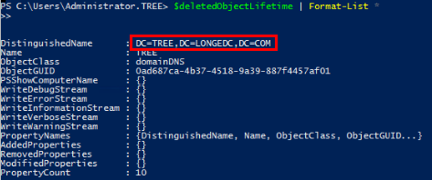
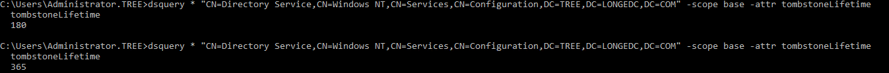

Before backup, enable the Active Directory Recycle Bin. Otherwise, some attributes may fail to be restored during object restoration.
The following operations use Windows Server 2019 as an example.
The Active Directory Administrative Center window is displayed.
A dialog box is displayed, asking you to confirm whether to enable the Recycle Bin.
If Enable Recycle Bin in the task bar on the right turns gray, the Recycle Bin has been enabled.
$deletedObjectLifetime | Format-List *

Set-ADObject -Identity "CN=Directory Service,CN=Windows NT,CN=Services,CN=Configuration,DC=TREE,DC=LONGEDC,DC=COM" -Partition "CN=Configuration, DC=TREE,DC=LONGEDC,DC=COM" -Replace:@{"tombstoneLifetime" = 365}
Set-ADObject -Identity "CN=Directory Service,CN=Windows NT,CN=Services,CN=Configuration,DC=TREE,DC=LONGEDC,DC=COM" -Partition "CN=Configuration, DC=TREE,DC=LONGEDC,DC=COM" -Replace:@{"msDS-DeletedObjectLifetime" = 365}
dsquery * "CN=Directory Service,CN=Windows NT,CN=Services,CN=Configuration,DC=TREE,DC=LONGEDC,DC=COM" -scope base -attr tombstoneLifetime
If the number in the command output is the number of days after the modification, the modification takes effect.
